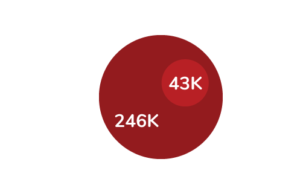
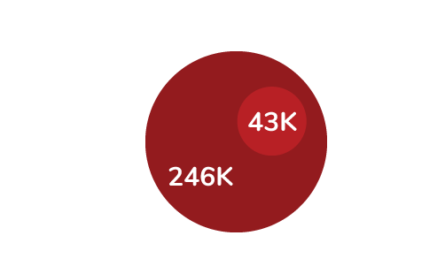

Cenário atual das mulheres na tecnologia
 

Fonte: USP, Tendências e Perspectivas da Engenharia no Brasil, 2012.
2. USP Data, reportado pela Camila Achutti, CTO e co-fundadora Ponte21.
Queremos promover a mudança!
A Carambola acredita que a diversidade é uma força que ajuda a fugir do tédio da homogeneidade e da fraqueza de uma visão única. O nosso primeiro passo é trazer novos olhares para a nossa empresa através das minorias e é por isso que precisamos de você. Que tal fazer parte da equipe Carambola?
Depoimentos
A gente escreveu umas palavrinhas para vocês sobre o que achamados que é ser mulher na tecnologia
Cintia Fumi Yamamoto
Desenvolvimento de Soluções Baseadas
Ser mulher na tecnologia é ter o poder de colaborar com esse universo, expondo-o a situações mais diversas. Assim como as diferenças de gênero, crença, etnia, classe etc., quanto mais diversidade, melhores soluções serão criadas e exploradas pela tecnologia, beneficiando cada vez mais pessoas.

Elaine Valverde
Product Owner
É fato que o mercado de tecnologia é dominado por homens, mas existem cada vez mais empresas e programas que incentivam e apoiam mulheres a entrar em TI. É um mercado em expansão e com muitas oportunidades, então não podemos acreditar quando dizem "isso é coisa de mulher". Lugar de mulher é onde ela quiser.

Maynnara Jorge
Desenvolvedora Front-end
Sou jornalista por formação e começar a estudar tecnologia abriu a minha visão para o quanto a história da tecnologia apagava a participação das mulheres e ignorava o quão importante e incrível elas foram. Precisamos de mais mulheres na tecnologia para inspirar as meninas que estão se sentindo deslocadas por quererem entrar numa área que hoje é predominada por homens.
Miguel Soares
Desenvolvedora Front-end
Ser uma pessoa trans na tecnologia é você resistir e existir como profissional e como uma pessoa vencedora. Eu amo o que faço e quero sempre levar a tecnologia a mais pessoas pra que seja um poder de todes.